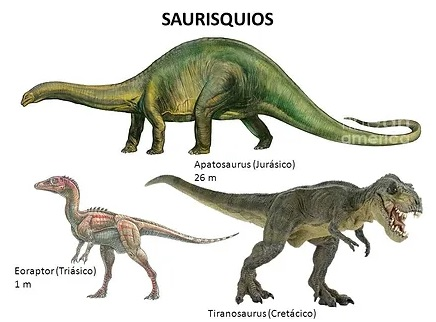

Aprende sobre los dinosaurios
Tipos de Dinosaurios
Podemos distinguir dos grupos:
- Saurisquios: son un tipo de dinosaurio de cadera tipo lagarto y tenían el pubis hacia adelante.
- Ornitisquios: otro tipo de dinosaurio con cadera de ave. Estos eran herbívoros y tenían el pubis apuntando hacia detrás.
- Saurisquios
Los Saurisquios aparecieron durante la fase del Triásico, hace ya unos 228 millones de años y comenzaron una diversificación durante los otros dos periodos, el Jurásico y el Cretácico.
Sus principales características son:
- Sus caderas tienen una formar similar a la de los lagartos, en las que el hueso púbico apunta hacia delante. En otras palabras, la pelvis, si la vemos de perfil, tiene una forma triangular.
- Dentro de este grupo amplio de dinosaurios, existían herbívoros muy grandes como puede ser el Apatosaurus, Brachiosaurus y Diplodocus. Eran los mayores vertebrados terrestres que existían, eran carnívoros bípedos, como los dinosaurios más famosos de la historia, el Velociraptor o el Tyrannosaurus Rex.
- Llegando al periodo del Cretácico, todos los Saurisquios que no eran aves, terminaron por extinguirse. Como detalle a tener en cuenta en cuanto a las características de los dinosaurios para niños es que, las aves modernas que conocemos hoy en día, como las gallinas, son descendientes directos de los Saurisquios aviares.

- Ornitisquios
Los Ornitisquios vivieron durante el Triásico superior y el Cretácico superior, hace unos 228 y 65 millones de años. Se distribuyeron a lo largo y ancho de toda la tierra.
Como podemos observar, su cadera es bastante similar a la de las aves que conocemos hoy en día. Esta gran similitud, es superficial ya que las aves actuales, como te hemos comentando en el anterior apartado, son descendiente de los Saurisquios.
Las principales características de los Ornitisquios son:
- A pesar de ser herbívoros vivían en manadas.
- Existían algunos que poseían cuernos o corazas para defenderse, eran animales muy pacíficos.
- Algunos caminaban a cuatro patas y otros usaban las patas traseras.
- Tenían un cuerpo muy fuerte, mucho más que el de los carnívoros y sus patas delanteras solían ser bastante más largas.
- El dinosaurio Ornitisquios más famosos es el Triceratops.
¿Qué son los Dinosaurios?
Edad de los Dinosaurios
Galeria Dinosaurios